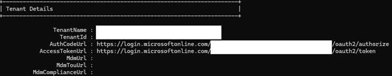
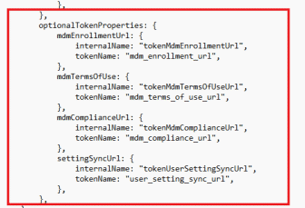
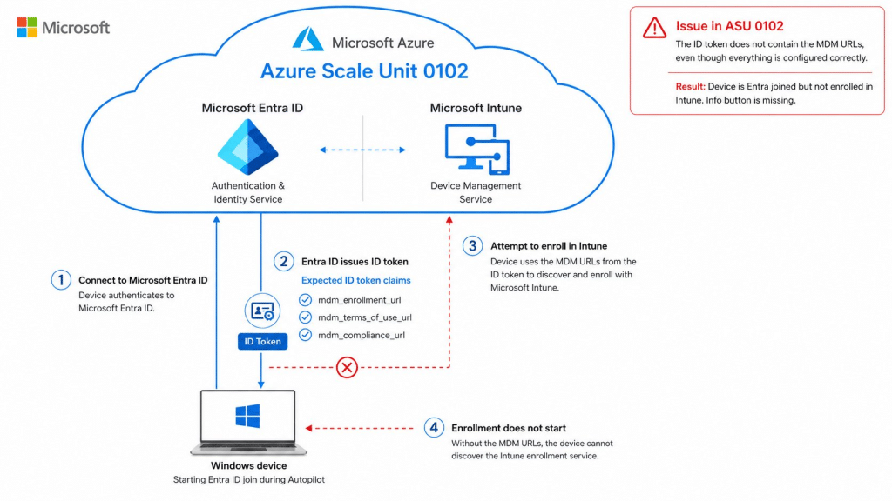
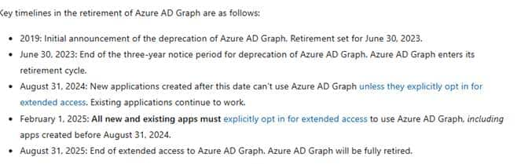
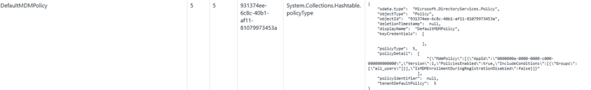
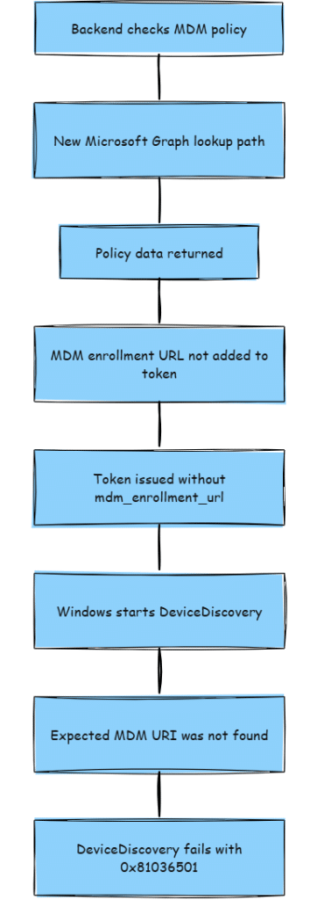

This blog is about incident IT1420224, in which Autopilot devices in tenants hosted on ASU 0102 failed to enroll in Intune and returned error 0x81036501: “Expected MDM URI was not found.“
Device Not Enrolling into Intune
This one did not start with a clear red flag on the device. That was the annoying part. The devices entered the Autopilot flow, and at first glance, nothing indicated that anything was wrong. The devices just moved into the Entra enrollment flow but skipped the entire Intune Enrollment, including the Enrollment status page.
Multiple devices from different tenants were analyzed, and both failed in the same way. That was the first important clue. When multiple different devices fail identically, I do not immediately assume a local Windows issue or a random network problem. It’s also obvious that we checked the settings you would normally check when the device failed to enroll into Intune: the MDM Scope, and if the user has a valid Intune License

Of course, the MDM Scope itself wasn’t the problem (otherwise I wouldn’t be writing this blog). So, after checking the obvious things and even checking if there wasn’t a hidden invalid MDM Policy in Graph, I needed to look further

To do so, I needed to know whether the devices were communicating via the same backend path and whether the issue was scoped to a single tenant, a single region, a dedicated scale unit, or something even broader.
First, narrowing down the scope
Before diving into the logs, we need to check the scope of impact. The question was simple: Is this happening only to one device, or are we looking at a tenant backend issue that returns the same broken result to multiple devices?
That is why we first checked which tenants were having the same issue and where they were located. It is just about narrowing down the blast radius. If all failing devices are connected to the same tenant backend path ( Azure Scale Unit), you stop chasing random local causes and start looking at the service path that creates the enrollment response.
That matters because a wrong tenant setting usually follows the tenant everywhere. A backend issue can be more selective. A code change or fix can roll out to a subset of the affected environments first. One tenant can look perfectly fine while another tenant based in a different ASU can have issues. Guess what? Everyone that had the same issue was located in the same ASU 0102!

So the investigation started with the scope. Multiple devices, same failure, different tenants, and the same Azure Scale unit: why did Windows never receive the MDM information it expected?
0x81036501 Expected MDM URI was not found
The useful clue finally showed up in the ModernDeployment diagnostics logs. Both devices failed during DeviceDiscovery with the same HRESULT: 0x81036501

The more specific log line was even better: Expected MDM URI was not found. That was pretty much the only useful thing the device told us. It said Windows expected an MDM URI and did not find one. Guess what again…. Dsregcmd /status showed us the same thing.. no MDMUrl information..


If this MDMUrl is not populated on the device… no Intune enrollment will happen (unless you manually configure it)
$key = 'SYSTEM\CurrentControlSet\Control\CloudDomainJoin\TenantInfo\*'
$keyinfo = Get-Item "HKLM:$key"
$url = $keyinfo.name
$url = $url.Split("\")[-1]
$path = "HKLM:\SYSTEM\CurrentControlSet\Control\CloudDomainJoin\TenantInfo\$url"
New-ItemProperty -LiteralPath $path -Name 'MdmEnrollmentUrl' -Value 'https://enrollment.manage.microsoft.com/enrollmentserver/discovery.svc' -PropertyType String -Force -ea SilentlyContinue;
New-ItemProperty -LiteralPath $path -Name 'MdmTermsOfUseUrl' -Value 'https://portal.manage.microsoft.com/TermsofUse.aspx' -PropertyType String -Force -ea SilentlyContinue;
New-ItemProperty -LiteralPath $path -Name 'MdmComplianceUrl' -Value 'https://portal.manage.microsoft.com/?portalAction=Compliance' -PropertyType String -Force -ea SilentlyContinue;Why 0x81036501 mattered
That error code sounded familiar. I wrote about 0x81036501 on Call4Cloud before. The root cause in that older case was different, but the meaning of the failure was already pointing in the same direction: Autopilot discovery could not find valid MDM information. Call4Cloud: Wrath of the 0x81036501 MDM Error
This time, the important part was not the generic wording about checking whether the tenant is provisioned for exactly one MDM. That wording can be useful, but it can also send you down the wrong path if you stop there. The important part besides the 0x81036501 error message was: Mobile Device Management MDM is not configured

That is much more specific. Windows was expecting the MDM enrollment URI during the join and discovery flow. For Intune, that URI normally comes from the MDM enrollment URL claim in the ID token.

The claim that Windows really needs to enroll into Intune is: MDM_Enrollment_URL


For Microsoft Intune, that value normally points to the same thing you configured in the MDM scope settings:

When that claim is present, Windows knows where to continue for Intune enrollment. When that claim is missing, Windows can still have enough information to continue the Entra join part, but it does not have the pointer it needs for automatic MDM enrollment.


That explains the behavior. Entra join can move forward, but the Intune side never really starts.
Health Message: IT1420224
After capturing a Fiddler trace, it was indeed obvious what was happening. Somehow, tenants that are located in the ASU 0102 failed to retrieve the MDM_Enrollment_URI because the claim was missing in the returned token.
With this evidence, it was pretty easy to contact MSFT and explain what was happening… Within a couple of hours, Microsoft published a new service health incident, which explained why that URI was missing.

As shown above, In incident IT1420224, Microsoft explained that a backend change migrated the Mobility Management Policy Service from Azure AD Graph to Microsoft Graph. During that migration, the Mobile Device Management enrollment URL claim was omitted from tokens during device enrollment.
That confirmed the direction of the investigation. The issue was that the backend in ASU 0102 issued a token without the MDM enrollment URL claim that Windows needed.
In other words, the token could still be valid. Entra join could still happen. But automatic Intune enrollment had no place to go.
Why Azure AD Graph matters here
Azure AD Graph was already legacy. Microsoft has been moving customers and internal services away from Azure AD Graph for years. Microsoft Graph is the modern API surface, and Azure AD Graph is on its retirement path.


Microsoft’s migration guidance states that Azure AD Graph entered its retirement cycle after the three-year deprecation notice ended on June 30, 2023. It also explains that new applications created after August 31, 2024 cannot use Azure AD Graph unless they explicitly opt in for extended access. Microsoft: Migrate your apps from Azure AD Graph to Microsoft Graph
So the move to Microsoft Graph makes sense… maybe just a couple of years too late… but is that only me thinking that? But this incident shows why this type of migration can still break something very specific.
This was probably not a simple rename from graph.windows.net to graph.microsoft.com. The old Azure AD Graph model and the newer Microsoft Graph model do not look the same… not at all
The old Azure AD Graph path was not one object
Inside the old internal Azure AD Graph policy, a policy called DefaultMDMPolicy was exposed.

That object had policyType 5 and tenantDefaultPolicy 5. Inside policyDetail, it pointed to the Microsoft Intune AppId.


That object told Entra that MDM enrollment was enabled. It told Entra that it applied to all users, enrollment during registration was not disabled, and it also told Entra which MDM application to use.
But it did not contain the actual enrollment URL. That is the first important finding. DefaultMDMPolicy was not the final source for the MDM URI. It was more like a pointer to the MDM application.
The second lookup resolved Microsoft Intune
The AppId in DefaultMDMPolicy was: 0000000a-0000-0000-c000-000000000000

That AppId resolves to the Microsoft Intune service principal. The interesting field on that service principal is appData. That is where the actual EnrollmentURL values were stored in the old Azure AD Graph response.

That gives us the old lookup chain. The MDM policy pointed to Intune. The Intune service principal contained the URL. The backend then had to take that EnrollmentUrl and put it into the ID token as mdm_enrollment_url.
The old working AD Graph flow

That is the important part. The old Deprecated AD Graph path was not just one simple property. It was policy, AppId, service principal, appData, EnrollmentUrl, and then finally the token claim.
The Microsoft Graph model is shaped differently
Microsoft Graph exposes the mobility management policy differently.
The Microsoft Graph beta endpoint is GET https://graph.microsoft.com/beta/policies/mobileDeviceManagementPolicies. Microsoft documents the resource as a device auto-enrollment policy for a mobility management application configured in Microsoft Entra ID. The object exposes fields such as discoveryUrl, complianceUrl, termsOfUseUrl, appliesTo, isValid, and isMdmEnrollmentDuringRegistrationDisabled. Microsoft Graph mobileDeviceManagementPolicy resource
That is a different shape than the old Azure AD Graph model. The Microsoft Graph path looks more like this:

That difference is probably where the migration broke apart (assuming… no facts). The backend still had to produce the same token claim Windows expects, but it now had to do that from a different object model.
What likely caused the 0x81036501
The most likely failure is that the new Microsoft Graph-based lookup did not fully reproduce the old Azure AD Graph-based behavior.
The old code probably knew how to walk the old chain. It could find DefaultMDMPolicy, read the Intune AppId, resolve the Microsoft Intune service principal, parse appData, extract EnrollmentUrl, and add that value to the token as mdm_enrollment_url.
The new code had to walk a different shape. It needed to query Microsoft Graph, read the mobility management policy, take discoveryUrl, and map that value back into the same mdm_enrollment_url claim.
Somewhere in that lookup or mapping path, the enrollment URL was not added to the token.


That is why the device only showed 0x81036501.

The device was not the component querying Microsoft Graph. The Microsoft backend was. The device only saw the final result: the MDM URI was missing: 0x81036501.
Why the ASU mattered:
The ASU check mattered because it helped keep the investigation grounded.
When you see multiple devices fail identically, it is easy to keep staring at the device. But if multiple devices in different tenants have the same issue… maybe its time to look at the Azure Scale Unit.
This also matches the way Microsoft described the fix. The service health updates did not say admins needed to change their MDM user scope or fix a tenant setting. Microsoft said a code fix was completed, moved into internal testing, and then started rolling out to a subset of the affected environment for validation before broader deployment.
That is why knowing the ASU to which the tenant belongs matters. It does not replace the logs, but it helps explain why the issue may be scoped instead of global.
Microsoft fixed it…? Or ?
In the incident, Microsoft mentioned that they fixed it… But… well, not 100%… as everyone needs to make a ghost change to the MMD policy to wake up the fix.
Please re-apply your Mobility (MDM) configuration in the Entra admin portal:
- Navigate to the Mobility (MDM and WIP) page within the Entra portal.
- Re-apply the updates you have previously made to either the “MDM user scope” or the “Disable MDM enrollment when adding work or school account on Windows” toggle.
Suggested steps:
- Open the Mobility (MDM and WIP) page.
- Select your configured MDM provider (for example, Microsoft Intune).
- First, make a dummy change to one of the impacted settings (e.g. change MDM user scope from “all” to “none” or toggle “Disable MDM enrollment when adding work or school account on Windows”.
- Click Save.
- Revert the temporary changes back to the initial, desired state.
- Click Save again.
This action re-triggers the policy update process and fixes the unhealthy policy state for the tenant.
After taking those steps… take a cup of coffee and wait an Intune minute… and if you already enrolled your device and want to enroll it manually in Intune… you need to run dsregcmd /refreshprt.
Summary
Windows started Autopilot device discovery. Windows expected an MDM URI. The backend issued a token without the MDM enrollment URL claim. Windows could not find a valid MDM and retried for roughly 14 minutes. The flow ended with 0x81036501.
The broken part was the translation between the backend policy lookup and the token claim Windows needed.
In the old Azure AD Graph path, the backend could resolve the EnrollmentUrl through DefaultMDMPolicy and the Microsoft Intune service principal. In the Microsoft Graph path, it had to resolve discoveryUrl from mobileDeviceManagementPolicies and still emit the same mdm_enrollment_url claim.
That conversion/migration failed badly.
Closing thoughts
The strange part is not that Microsoft is moving away from Azure AD Graph. That migration makes sense. Azure AD Graph has been legacy for years, and Microsoft Graph is clearly the path forward.
The strange part is that this kind of migration is still happening inside an enrollment critical backend path in 2026, and that it was enough to break all Intune enrollments for tenants in a specific Azure Scale Unit.
That is what makes this incident interesting. The device was not broken. The tenant settings were not broken. The license was not missing. The MDM scope was not wrong.
Windows simply asked for the information it needed to continue, and the backend returned a token without the MDM enrollment URL claim.
And when that one claim is missing, Autopilot has no idea where to go next.
So yes, moving from Azure AD Graph to Microsoft Graph is the right direction. But doing it this late, on a path that determines whether a device can enroll in Intune at all, feels a bit too late to still be discovering these kinds of gaps in production.